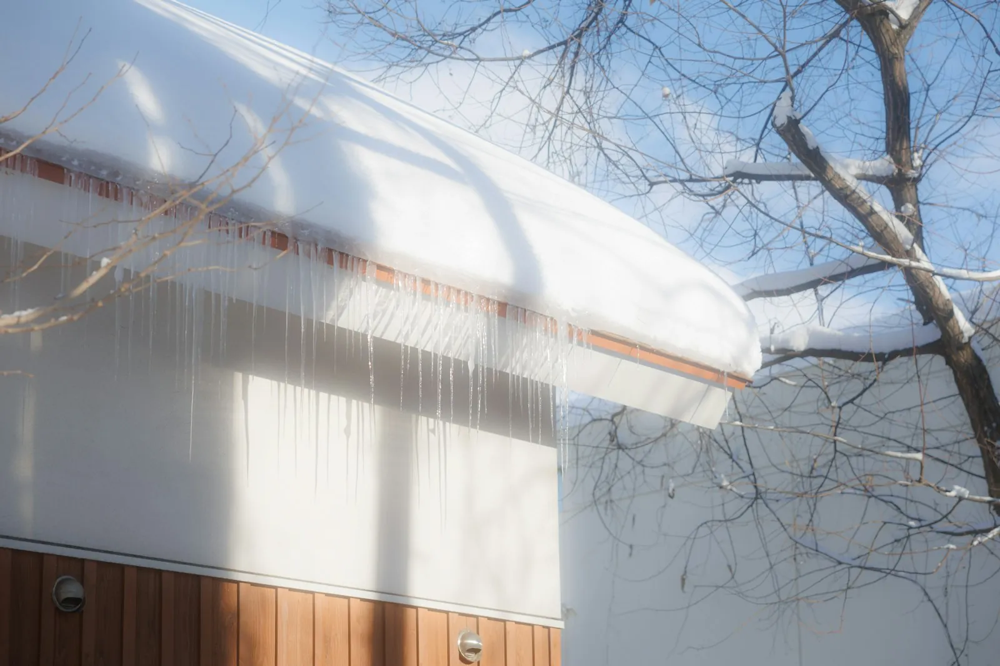
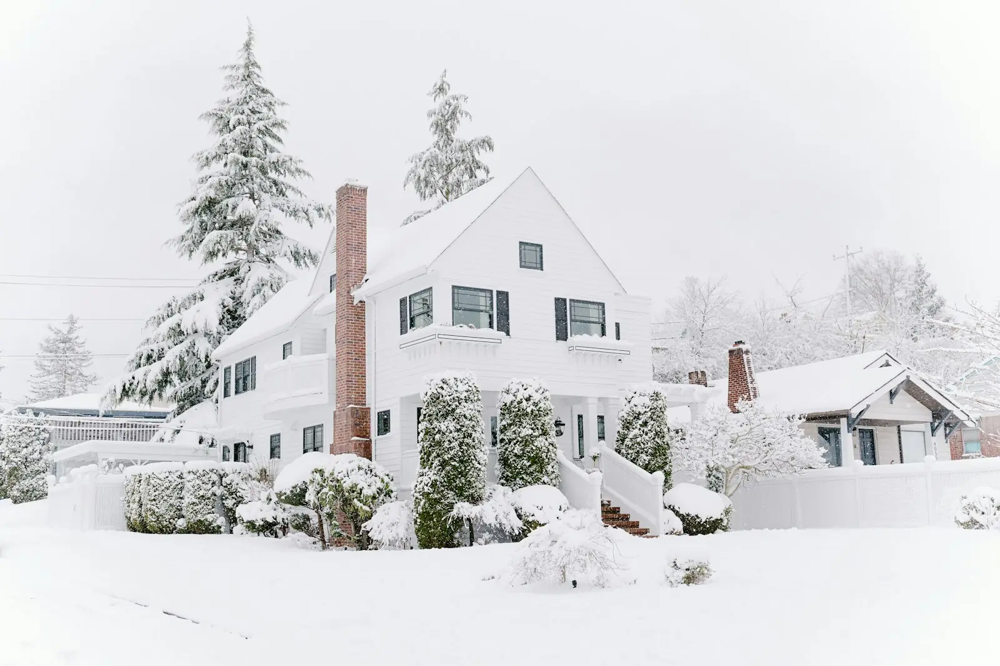

It's a common winter call in Utah: a water stain on a bedroom ceiling, usually along an outside wall, right after a cold snap. Often the roof itself isn't broken. Water from melting snow has backed up behind a ridge of ice at the eaves and found its way under the shingles.
That ridge of ice is an ice dam. Here's what causes them, how to stop them, and what to do if you already have one.
What causes ice dams
An ice dam needs three things: snow on the roof, a roof deck that's warm enough to melt it, and cold eaves where the meltwater can freeze again.
North Dakota State University Extension explains it plainly: heat escaping into the attic warms the roof and melts the snow, and when that water reaches the colder edge of the roof, it freezes. Day after day the ice builds up into a dam. New meltwater pools behind it, and shingles are built to shed water, not hold back a puddle. So it seeps under them and into the house.
That's why ice dams show up over heated rooms and not over an unheated garage. The heat source is your house.

Why Utah roofs get ice dams
The Salt Lake Valley gets real snow. The University of Utah's Salt Lake Valley snowstorm climatology puts the average at about 65 inches a year at the airport and close to 100 inches on the benches around the valley. It also notes that the Great Salt Lake produces localized snowbands several times each winter.
Add our typical pattern of cold nights and sunny days, and you get the perfect cycle: snow sits on the roof, the house and the sun warm the upper roof, and the water freezes again at the shaded, cold eaves overnight. Homes on the benches, in Park City and up the canyons get more snow, but valley homes get ice dams too.
How to prevent ice dams: fix the attic first
The long-term cure happens inside the attic, not on the roof. The goal is a roof deck that stays close to the outdoor temperature, so snow melts evenly or not at all.
1. Seal attic air leaks
Warm, moist air rises into the attic through every gap in the ceiling below. NDSU Extension lists the usual leaks: gaps around chimneys, plumbing vents, wiring, recessed lights, ceiling fan mounts and the attic hatch. Seal those with the right materials (fire-rated where needed around chimneys and flues) before adding insulation.
2. Add insulation
Insulation slows the heat that does get through. NDSU suggests attics in northern climates need roughly 15 inches of blown-in insulation. Keep it off the soffit vents, using baffles at the eaves so air can still flow in.
3. Vent from the soffits to the ridge
Ventilation carries away the heat that sneaks past the insulation. Cold outside air comes in at the soffits, sweeps under the roof deck, and leaves at a ridge vent or high vents. Both halves matter: a ridge vent with blocked soffits doesn't move much air. If you're not sure what a ridge vent does, our article on ridge vents and their advantages explains it.
4. Move heat sources out of the attic
Bathroom and kitchen fans should vent outside, not into the attic. Old ductwork running through the attic should be sealed and insulated. An old swamp cooler opening can be a big heat leak in winter, too; our article on removing a swamp cooler covers what's involved.
Roof details that keep ice dam water out
Even a well-sealed attic can't stop every ice dam during a long cold snap. These details make sure the water that does back up stays out of the house.
Ice barrier at the eaves
Utah adopted the 2021 International Residential Code, which includes an ice barrier rule for shingle and other steep-slope roofs in areas where ice has historically formed along the eaves. Where it applies, the barrier is a self-adhering membrane (often called ice and water shield) or two layers of cemented underlayment. It runs from the edge of the roof to at least 24 inches inside the exterior wall line.
That 24 inches is measured horizontally, inside the wall, so on a typical overhang the membrane has to run a lot farther up the roof than one 36-inch roll. Fine Homebuilding works through examples where it ends up around 47 to 50 inches up the slope. Your city's building department decides whether it's required where you live. Even where it isn't, it's worth asking for on any roof that gets snow.
Gutters and downspouts that drain
A gutter packed with leaves or ice holds water right at the eave, which is exactly where you don't want it. Clean gutters before the first freeze, and make sure downspouts drain away from walkways where meltwater will refreeze. Our guide to cleaning gutters safely covers the how-to.
Flashing and valleys
Valleys, chimneys and wall junctions collect snow and meltwater. Loose or rusted flashing there turns a small ice dam into a leak. A pre-winter roof check is the time to catch it.

Already have an ice dam? Do this
- Clear snow from the ground. Use a roof rake with an extension pole to pull snow off the bottom three or four feet of the roof. Less snow means less meltwater feeding the dam.
- Don't climb onto an icy roof. Falls from ladders and roofs are a real risk in winter. Leave rooftop work to a crew with the right gear.
- Never chip the ice. Hammers, axes and shovels tear shingles and gutters, and can turn a temporary problem into a roof repair.
- Catch the water inside. Put down towels and buckets, move valuables, and take photos of any stains and drips with the date.
- Call a roofer if water is getting in. A professional can open a channel through the ice safely and check the roof for damage once it melts.
If water is already coming through the ceiling, our emergency roofing crew can help. For leaks that show up after the thaw, see our roof leak repair service.
Heat cables, salt and other quick fixes
Heat cables (heat tape) zigzagged along the eaves can keep a drainage path open over a problem spot. They're useful on a stubborn valley or a low eave over a porch. But they use electricity all winter, they can fail without anyone noticing, and they don't stop the melting that causes the dam. NDSU Extension warns that homeowners often try to treat the symptoms of ice dams with things like heat tape instead of preventing the problem in the first place.
Calcium chloride ice melt in a stocking laid across the dam can melt a channel in a pinch. Avoid rock salt (sodium chloride), which can damage shingles, gutters and the plants below.
Does an ice dam mean you need a new roof?
Usually not. Most ice dam leaks are fixed by repairing the damaged area and fixing the attic so it doesn't happen again. That's the idea behind our Repair-First Promise: if your roof can be repaired, we won't sell you a replacement.
If your roof is near the end of its life anyway, or the leaks have rotted the deck at the eaves, a replacement with a proper ice barrier and balanced ventilation is often the better spend. Our article on roof repair vs. roof replacement walks through that decision, and how long roofs last in Utah can help you judge where yours is.
A simple pre-winter ice dam checklist
- Gutters and downspouts clean and draining
- Attic hatch, recessed lights and plumbing gaps sealed
- Insulation even, deep, and kept off the soffit vents
- Soffit and ridge vents open
- Bath and kitchen fans venting outdoors
- Flashing at chimneys, valleys and walls tight
- A roof rake hanging in the garage
For the rest of your fall to-do list, see our seasonal roof maintenance checklist.
Ice dam questions
Are icicles bad for your roof?
What is the fastest way to get rid of an ice dam?
Do heat cables stop ice dams?
Will a new roof stop ice dams?
Does homeowners insurance cover ice dam damage?
Get your roof ready before the snow
American Roofing Company has worked on Utah roofs since 1954. We'll look at your roof and attic venting, explain what we find, and give you complete pricing before anything is scheduled. Call 801-269-1276 or request a free quote.
Sources
- North Dakota State University Extension: Reduce ice dam and icicle damage (January 2023)
- University of Utah, Department of Atmospheric Sciences: Salt Lake Valley Snowstorms
- International Code Council: Utah adoption of the 2021 International Codes
- Fine Homebuilding: Ice barriers explained